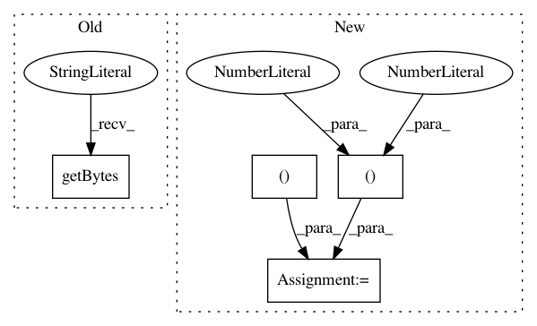

c7e3f97606320d2970a3ccc7617c63c053c90cd7,tests/test_testselect.py,,test_reduce,#,12
Before Change
failing_together[b"test-linux64/opt$test-windows10/opt"] = struct.pack(
"ff", 0.1, 0.91
)
failing_together[b"test-linux64/debug$test-linux64/opt"] = struct.pack(
"ff", 0.1, 1.0
)
failing_together[b"test-linux64-asan/debug$test-linux64/debug"] = struct.pack(
After Change
def test_reduce():
failing_together = test_scheduling.get_failing_together_db("label")
failing_together[b"test-linux64/debug"] = pickle.dumps(
{
"test-windows10/debug": (0.1, 1.0),
"test-windows10/opt": (0.1, 1.0),
"test-linux64/opt": (0.1, 1.0),
}
)
failing_together[b"test-linux64/opt"] = pickle.dumps(
{"test-windows10/opt": (0.1, 0.91),}
)
failing_together[b"test-linux64-asan/debug"] = pickle.dumps(
In pattern: SUPERPATTERN
Frequency: 3
Non-data size: 4
Instances
Project Name: mozilla/bugbug
Commit Name: c7e3f97606320d2970a3ccc7617c63c053c90cd7
Time: 2020-06-01
Author: mcastelluccio@mozilla.com
File Name: tests/test_testselect.py
Class Name:
Method Name: test_reduce
Project Name: mil-tokyo/webdnn
Commit Name: a120cb4377c48caba2d2dbb25f126a06568e01be
Time: 2017-12-15
Author: y.kikura@gmail.com
File Name: src/graph_transpiler/webdnn/frontend/tensorflow/ops/gen_nn_ops.py
Class Name:
Method Name: max_pool_handler
Project Name: mil-tokyo/webdnn
Commit Name: a120cb4377c48caba2d2dbb25f126a06568e01be
Time: 2017-12-15
Author: y.kikura@gmail.com
File Name: src/graph_transpiler/webdnn/frontend/tensorflow/ops/gen_nn_ops.py
Class Name:
Method Name: avg_pool_handler